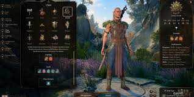

Baldurs Gate 3 es un videojuego de rol (RPG) desarrollado y publicado por Larian Studios, basado en el famoso universo de Dungeons & Dragons (D&D). Es la tercera entrega principal de la serie Baldur's Gate, que comenza en 1998. El juego fue lanzado oficialmente en agosto de 2023 para PC y Mac, y para PlayStation 5 en septiembre de 2023, con planes de lanzamiento en Xbox Series X/S en el futuro
¿De que trata Baldurs Gate 3?
Baldurs Gate 3 se desarrolla en el universo de Reinos Olvidados, un mundo de fantasma de Dungeons & Dragons, y se ambienta despues de los eventos de Baldur's Gate 2 (2000). Los jugadores se encuentran con una historia de invasion, donde su personaje es secuestrado por una raza maligna conocida como los Mind Flayers (Comedores de Mente), quienes los infectan con un parasito que les otorga extrañas habilidades, pero tambien puede transformarlos en monstruos horribles.
El protagonista logra escapar y, a partir de ahy, debe formar un grupo con otros personajes que tambien estan luchando contra la misma amenaza y sus propios demonios personales. A medida que avanzas, el juego te ofrece multiples caminos, personajes y situaciones donde las decisiones que tomes pueden tener un impacto significativo en la narrativa, el destino de los personajes y la historia del mundo.
